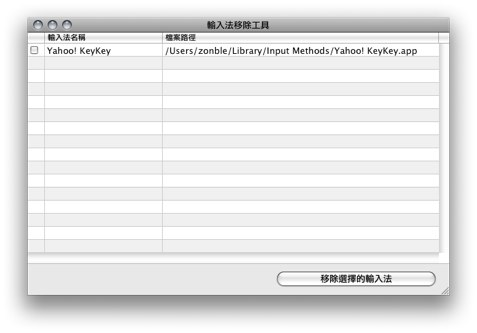

Copyright © 2009 Weizhong Yang (a.k.a zonble, http://zonble.net). All Rights Reserved.
請從本專案的 檔案下載區 取得各個版本的應用程式。不定期更新。
在 Mac OS X 上，大致來說，並沒有所謂的「軟體反安裝」（Uninstaller）這樣的機制－各種應用程式都包裝成所謂的「Application Bundle」，拖進硬碟中即可使用，丟進垃圾桶即可刪除。不過，各種接近系統底層的應用－也就是往往必須要用到系統管理員權限才能夠安裝的程式－想要刪除就不是那麼容易，您可能找不到檔案裝在什麼地方，或是不清楚如何使用管理員權限刪除。而輸入法就是這樣的程式。
這套工具的用途，就是協助您刪除曾經安裝過各種的輸入法。包括 10.4 之前所使用的 TSM （Text Service Manager）架構、與 10.5 之後的 IMK（Input Method kit）架構輸入法。
請注意－這套工具只會幫您刪除「您自己安裝的」，而不包括 Mac OS X 系統出廠時所內建的輸入法。
本軟體可以在 Mac OS X 10.4（Tiger） 以上版本的麥金塔電腦上使用，包括 10.5 與 10.6 系統，在 PowerPC 或 Intel CPU 的機種上均可使用。
打開「Mac OS X 輸入法移除工具」後，在主畫面中央，就是您之前曾經安裝過的輸入法列表。請在列表中，用滑鼠點選您想要移除的輸入法，最後按下畫面右下方的確定按鈕。

程式接下來會詢問你是否確定要刪除，而且會向您詢問系統管理員密碼，接下來就會進行刪除。在刪除完畢之後，您會需要重新登入系統。


您可以下載本專案的原始程式碼，包括 zip 或 tar 格式的壓縮檔案。
您也可以直接透過 Git 版本管理工具，取得本專案的程式碼，指令為－
$ git clone git://github.com/zonble/imremoval
有任何意見或建議，請來信至 service {at} zonble {dot} net